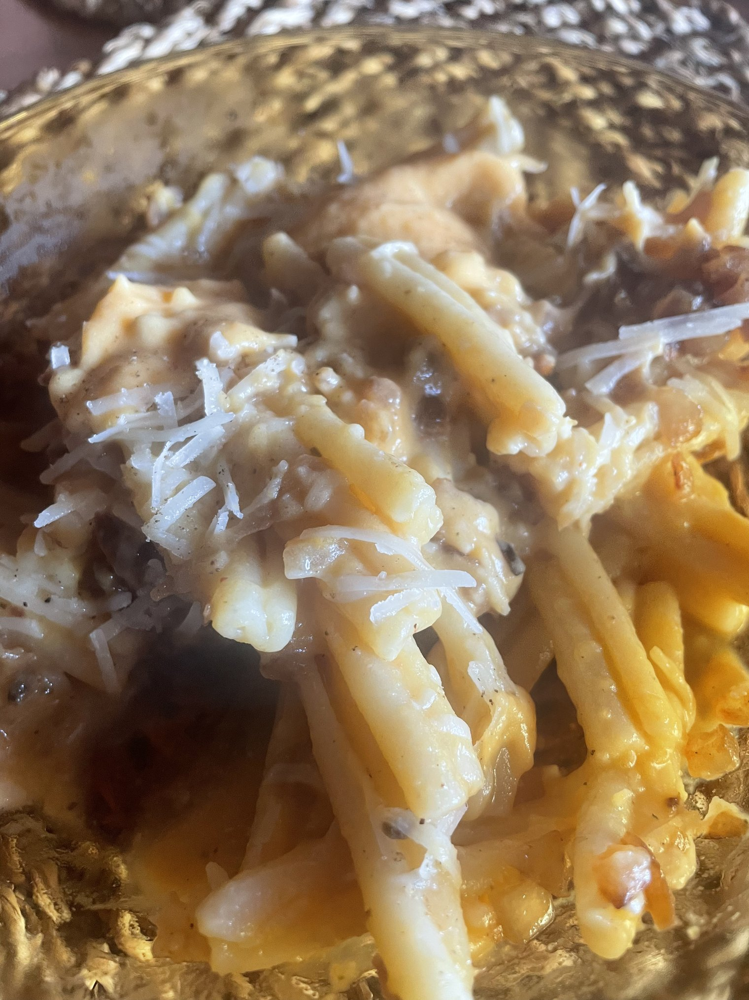

Pasta con crema de calabaza
Ingredientes
2×
- 0.5 cebolla
- aceite de oliva
- 400 g de calabaza
- 200 g de pasta
- parmesano rallado
- pimienta negra

Preparación
Paso 1
Sofreír 0.5 cebolla picada con un poco de aceite de oliva. Añadir 400 g de calabaza en dados, cubrir con un poco de agua y cocer 15min.
Paso 2
Triturar la calabaza hasta obtener una crema, salpimentar.
Paso 3
Cocer 200 g de pasta en agua con sal, escurrir y mezclar con la crema de calabaza.
Paso 4
Servir con parmesano rallado y pimienta negra.
Resumen
0.5 cebolla
aceite de oliva
400 g de calabaza
Sofreír cocer
Triturar
200 g de pasta
parmesano rallado
pimienta negra
Cocer mezclar